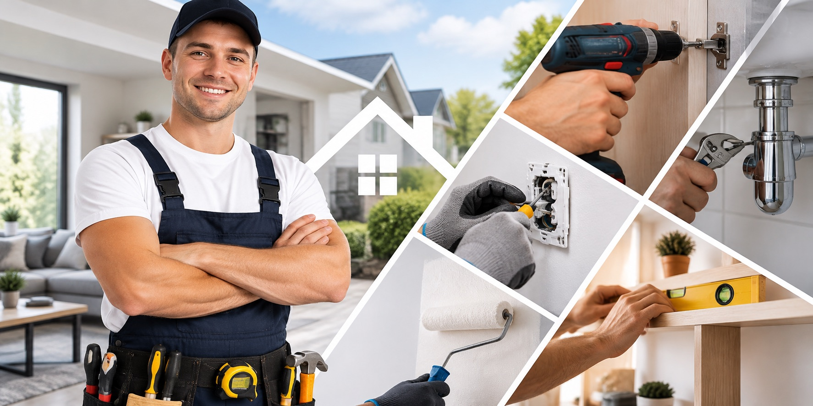

Naprawa i montaż rolet i karniszy
Montaż nowych rolet, żaluzji i karniszy, wymiana linek, taśm i mechanizmów.

15 lat doświadczenia · Bielsko-Biała i okolice
Drobne naprawy domowe i prace wykończeniowe wykonane solidnie i na czas. Pogotowie hydrauliczne i elektryczne dostępne 24 godziny na dobę, 7 dni w tygodniu.
Specjalizacje
Szeroki zakres drobnych usług naprawczych i wykończeniowych. Nie widzisz swojej usługi na liście? Zadzwoń i zapytaj.
Montaż nowych rolet, żaluzji i karniszy, wymiana linek, taśm i mechanizmów.
Pralki, zmywarki, piekarniki, płyty indukcyjne i okapy — podłączenie i uruchomienie.
Gniazdka, włączniki, oświetlenie, wymiana bezpieczników, szukanie przyczyny awarii.
Cieknące krany, syfony, spłuczki, wymiana baterii i zaworów, udrażnianie odpływów.
Regulacja skrzydeł, wymiana uszczelek, klamek i zamków, naprawa okuć.
Montaż mebli z paczki, szaf, kuchni i mebli na wymiar, wieszanie półek i luster.
Wszystkie drobne naprawy, których nie ma kto zrobić — od wiercenia po wymianę silikonu.
Gładzie, malowanie, płytki, zabudowa z płyt g-k oraz drobne prace remontowe.
O mnie
Witam serdecznie. Wiem, że dobry remont to nie tylko ładny efekt końcowy. To również terminowość, dokładność, komunikacja i porządek po zakończonej pracy.
Oferuję szeroki zakres drobnych usług naprawczych i wykończeniowych — hydraulikę, elektrykę oraz wszelkie prace budowlane. Każde zlecenie wyceniam indywidualnie, po rozmowie i poznaniu zakresu prac.
Potrzebujesz fachowca? Zadzwoń — 24/7.
Dlaczego ja
Umówiona godzina to umówiona godzina. Jeśli coś się zmienia — dzwonię wcześniej.
Robię raz, a porządnie. Bez prowizorki i wracania do tej samej usterki.
Tłumaczę, co i dlaczego trzeba zrobić. Zakres i koszt ustalamy przed rozpoczęciem.
Zabezpieczam podłogi i meble, a po pracy zostawiam mieszkanie posprzątane.
Obszar działania
Pracuję na terenie Bielska-Białej oraz w pobliskich miejscowościach. Jeśli nie masz pewności, czy dojadę pod Twój adres — zadzwoń i zapytaj.
Kontakt
Każda usługa wyceniana jest indywidualnie, po rozmowie i poznaniu zakresu prac. Zadzwoń albo napisz na WhatsApp — najszybciej odpowiadam telefonicznie.